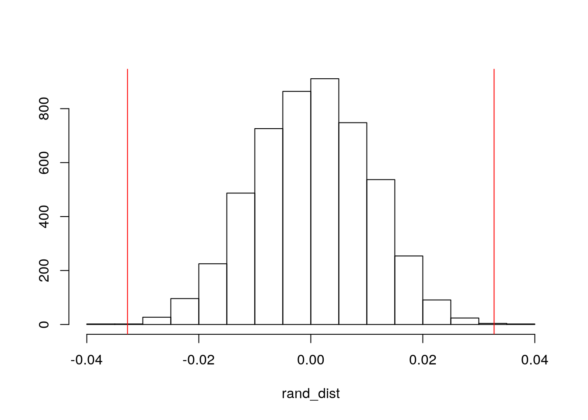
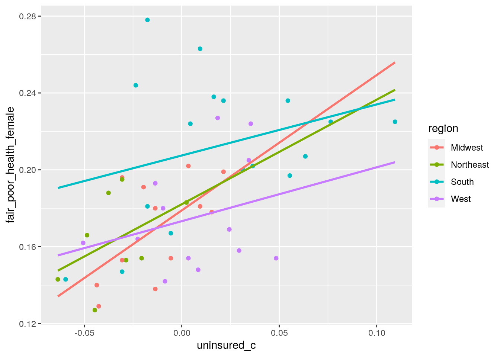
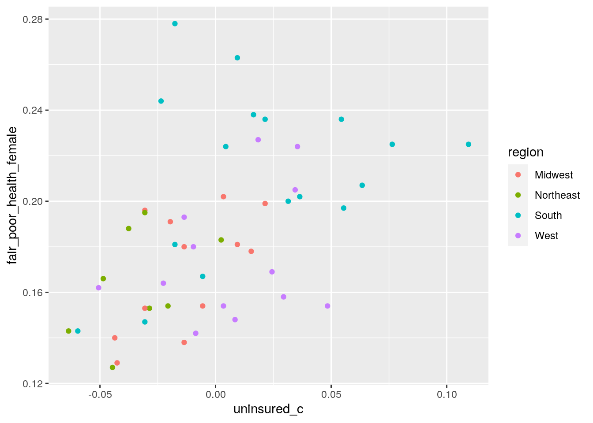
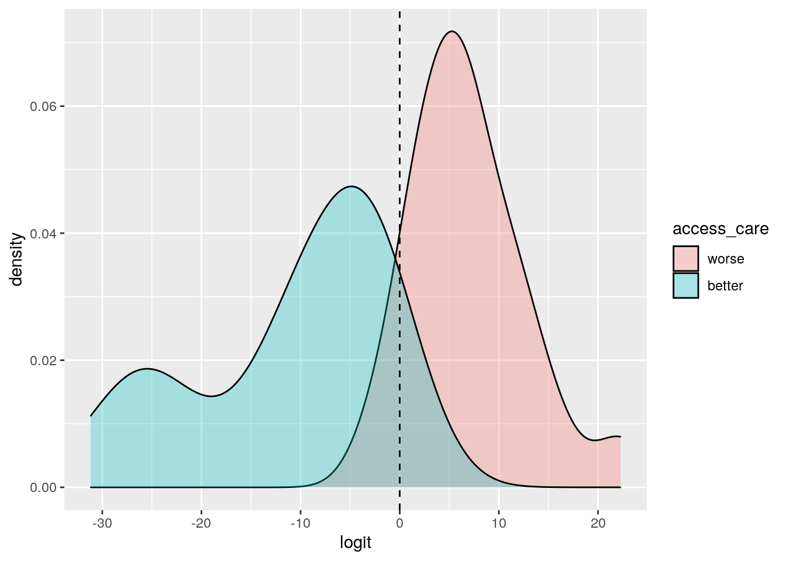
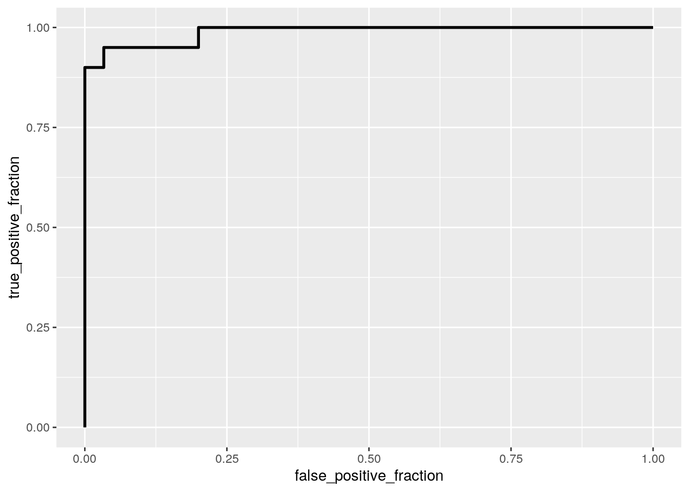

# creating the dataset
kffdata2019 <- read_csv("https://docs.google.com/spreadsheets/d/1_rxG8aDOpZJmv4epo7uDpv86tTpI1nSD_BmpTNYWE2M/export?format=csv&gid=0")
# install.packages('fivethirtyeight')
library(fivethirtyeight)
library(tidyverse)
state_info <- state_info
state_info <- rename(state_info, location = state)
state_info = subset(state_info, select = -c(state_abbrev, division))
# merge datatsets by state
merged_data <- kffdata2019 %>% left_join(state_info, by = "location")
# creating a binary categorical variable variable 1 indicates
# that state poverty rate is above U.S. poverty rate of
# 0.123; variable 0 indicates that state poverty rate is
# below U.S. poverty rate of 0.123
merged_data_new <- merged_data %>% mutate(pr_binary = ifelse(poverty_rate >
0.123, "above", "below"))
# removing rows that contain NAs from dataset
kff_merged_data <- merged_data_new[-c(1, 32), ]This is a custom dataset of 2019 statistics compiled from the Kaiser Family Foundation State Health Facts website. The dataset includes 50 observations, with 8 variables, pertaining to healthcare by state. Specifically, the health demographic variables are the percentage of all adults who reported not being able to see a doctor in the past 12 months due to cost ("no_doctor"), the percentage of uninsured nonelderly adults between the ages of 0-64("uninsured"), state total poverty rates ("poverty_rate"), and the percentage of males and females who self-reported a fair or poor health status based on a Behavioral Risk Factor Surveillance System ("fair_poor_health_male" and "fair_poor_health_female"). Variables describing state and overall geographic region were also included. Additionally, the state poverty level variable was dichotomized based on whether a given state fell above or below the national poverty rate of 0.123 (percentage of individuals overall who met the U.S. Census Bureau's poverty threshold in 2019).This data contains important information it helps highlight geographic disparities regarding access to care and perceived health status, influenced by uninsured and poverty rates across the U.S.
# install.packages('dplyr')
library(dplyr)
# changing columns into numeric variables
kff_merged_data$no_doctor <- as.numeric(as.character(kff_merged_data$no_doctor))
kff_merged_data$fair_poor_health_male <- as.numeric(as.character(kff_merged_data$fair_poor_health_male))
kff_merged_data$fair_poor_health_female <- as.numeric(as.character(kff_merged_data$fair_poor_health_female))
# MANOVA test
man <- manova(cbind(no_doctor, uninsured, poverty_rate, fair_poor_health_male,
fair_poor_health_female) ~ region, data = kff_merged_data)
summary(man)## Df Pillai approx F num Df den Df Pr(>F)
## region 3 0.5789 2.1041 15 132 0.01323 *
## Residuals 46
## ---
## Signif. codes: 0 '***' 0.001 '**' 0.01 '*' 0.05 '.' 0.1 ' ' 1summary.aov(man)## Response no_doctor :
## Df Sum Sq Mean Sq F value Pr(>F)
## region 3 0.013456 0.0044852 9.7838 4.164e-05 ***
## Residuals 46 0.021088 0.0004584
## ---
## Signif. codes: 0 '***' 0.001 '**' 0.01 '*' 0.05 '.' 0.1 ' ' 1
##
## Response uninsured :
## Df Sum Sq Mean Sq F value Pr(>F)
## region 3 0.018009 0.0060029 5.761 0.001971 **
## Residuals 46 0.047932 0.0010420
## ---
## Signif. codes: 0 '***' 0.001 '**' 0.01 '*' 0.05 '.' 0.1 ' ' 1
##
## Response poverty_rate :
## Df Sum Sq Mean Sq F value Pr(>F)
## region 3 0.011134 0.0037112 7.5906 0.0003166 ***
## Residuals 46 0.022490 0.0004889
## ---
## Signif. codes: 0 '***' 0.001 '**' 0.01 '*' 0.05 '.' 0.1 ' ' 1
##
## Response fair_poor_health_male :
## Df Sum Sq Mean Sq F value Pr(>F)
## region 3 0.015286 0.0050955 7.9048 0.0002343 ***
## Residuals 46 0.029652 0.0006446
## ---
## Signif. codes: 0 '***' 0.001 '**' 0.01 '*' 0.05 '.' 0.1 ' ' 1
##
## Response fair_poor_health_female :
## Df Sum Sq Mean Sq F value Pr(>F)
## region 3 0.020410 0.0068033 7.1502 0.0004859 ***
## Residuals 46 0.043768 0.0009515
## ---
## Signif. codes: 0 '***' 0.001 '**' 0.01 '*' 0.05 '.' 0.1 ' ' 1# post hoc t-tests
pairwise.t.test(kff_merged_data$no_doctor, kff_merged_data$region,
p.adj = "none")##
## Pairwise comparisons using t tests with pooled SD
##
## data: kff_merged_data$no_doctor and kff_merged_data$region
##
## Midwest Northeast South
## Northeast 0.19995 - -
## South 0.00025 1.3e-05 -
## West 0.13581 0.01036 0.01986
##
## P value adjustment method: nonepairwise.t.test(kff_merged_data$uninsured, kff_merged_data$region,
p.adj = "none")##
## Pairwise comparisons using t tests with pooled SD
##
## data: kff_merged_data$uninsured and kff_merged_data$region
##
## Midwest Northeast South
## Northeast 0.15207 - -
## South 0.01270 0.00038 -
## West 0.12866 0.00639 0.33572
##
## P value adjustment method: nonepairwise.t.test(kff_merged_data$poverty_rate, kff_merged_data$region,
p.adj = "none")##
## Pairwise comparisons using t tests with pooled SD
##
## data: kff_merged_data$poverty_rate and kff_merged_data$region
##
## Midwest Northeast South
## Northeast 0.3772 - -
## South 0.0010 0.0002 -
## West 0.7988 0.2626 0.0018
##
## P value adjustment method: nonepairwise.t.test(kff_merged_data$fair_poor_health_male, kff_merged_data$region,
p.adj = "none")##
## Pairwise comparisons using t tests with pooled SD
##
## data: kff_merged_data$fair_poor_health_male and kff_merged_data$region
##
## Midwest Northeast South
## Northeast 0.66555 - -
## South 0.00045 0.00044 -
## West 0.83849 0.53537 0.00067
##
## P value adjustment method: nonepairwise.t.test(kff_merged_data$fair_poor_health_female, kff_merged_data$region,
p.adj = "none")##
## Pairwise comparisons using t tests with pooled SD
##
## data: kff_merged_data$fair_poor_health_female and kff_merged_data$region
##
## Midwest Northeast South
## Northeast 0.64860 - -
## South 0.00067 0.00058 -
## West 0.66970 0.40061 0.00205
##
## P value adjustment method: none# probability of at least one Type 1 error
p_type1 = 1 - (0.95^36)
p_type1## [1] 0.8422208# Boneferroni correction
a_overall = 0.05/36
a_overall## [1] 0.001388889# MANOVA predictions: multivariate normality
library(rstatix)
group <- kff_merged_data$region
DVs <- kff_merged_data %>% select(no_doctor, uninsured, poverty_rate,
fair_poor_health_male, fair_poor_health_female)
## Test multivariate normality for each group (null:
## assumption met)
sapply(split(DVs, group), mshapiro_test) #p-value less than 0.05, reject the null## Midwest Northeast South West
## statistic 0.6764628 0.6756131 0.7526422 0.7275864
## p.value 0.0005046839 0.001189979 0.0004878049 0.001062674# MANOVA predictions: homogeneity of (co)variances Box's M
# test (null: assumption met)
box_m(DVs, group)## # A tibble: 1 x 4
## statistic p.value parameter method
## <dbl> <dbl> <dbl> <chr>
## 1 50.8 0.257 45 Box's M-test for Homogeneity of Covariance Matrices## covariance matrices for each group
lapply(split(DVs, group), cov)## $Midwest
## no_doctor uninsured poverty_rate fair_poor_health_male
## no_doctor 0.0003336061 2.318333e-04 1.019091e-04 2.457121e-04
## uninsured 0.0002318333 4.808106e-04 8.922727e-05 8.582576e-05
## poverty_rate 0.0001019091 8.922727e-05 1.608182e-04 1.999545e-04
## fair_poor_health_male 0.0002457121 8.582576e-05 1.999545e-04 4.657197e-04
## fair_poor_health_female 0.0003445606 3.386288e-04 2.671364e-04 4.605530e-04
## fair_poor_health_female
## no_doctor 0.0003445606
## uninsured 0.0003386288
## poverty_rate 0.0002671364
## fair_poor_health_male 0.0004605530
## fair_poor_health_female 0.0006742652
##
## $Northeast
## no_doctor uninsured poverty_rate fair_poor_health_male
## no_doctor 1.898393e-04 2.326250e-04 1.578571e-05 6.030357e-05
## uninsured 2.326250e-04 3.942679e-04 -1.221429e-05 1.706607e-04
## poverty_rate 1.578571e-05 -1.221429e-05 2.677143e-04 1.840714e-04
## fair_poor_health_male 6.030357e-05 1.706607e-04 1.840714e-04 3.961250e-04
## fair_poor_health_female 1.683393e-04 2.145536e-04 2.526429e-04 3.452321e-04
## fair_poor_health_female
## no_doctor 0.0001683393
## uninsured 0.0002145536
## poverty_rate 0.0002526429
## fair_poor_health_male 0.0003452321
## fair_poor_health_female 0.0005616964
##
## $South
## no_doctor uninsured poverty_rate fair_poor_health_male
## no_doctor 0.0007261103 0.0010131434 0.0003218456 0.0004040772
## uninsured 0.0010131434 0.0019079926 0.0002119743 0.0003914191
## poverty_rate 0.0003218456 0.0002119743 0.0007705662 0.0006392794
## fair_poor_health_male 0.0004040772 0.0003914191 0.0006392794 0.0010869853
## fair_poor_health_female 0.0005213787 0.0005071985 0.0007196324 0.0011419963
## fair_poor_health_female
## no_doctor 0.0005213787
## uninsured 0.0005071985
## poverty_rate 0.0007196324
## fair_poor_health_male 0.0011419963
## fair_poor_health_female 0.0014220147
##
## $West
## no_doctor uninsured poverty_rate fair_poor_health_male
## no_doctor 3.726410e-04 0.0004235962 0.0001185449 9.416667e-05
## uninsured 4.235962e-04 0.0007795769 0.0002033526 1.514167e-04
## poverty_rate 1.185449e-04 0.0002033526 0.0005431923 2.840833e-04
## fair_poor_health_male 9.416667e-05 0.0001514167 0.0002840833 3.636667e-04
## fair_poor_health_female 2.362308e-04 0.0002185513 0.0005315962 4.483333e-04
## fair_poor_health_female
## no_doctor 0.0002362308
## uninsured 0.0002185513
## poverty_rate 0.0005315962
## fair_poor_health_male 0.0004483333
## fair_poor_health_female 0.0008055897Through the MANOVA test, it was found that at least one group mean differs for at least one of the response variables based on the categorical variable "region", thus rejecting the null hypothesis (p-value = 0.01323). As such, a univariate ANOVA analysis was performed, which identified that there was a significant mean difference based on region for the following variables: no_doctor (p-value = 4.164e-05), uninsured (p-value = 0.001971), poverty_rate (p-value = 0.0003166), fair_poor_health_male (p-value = 0.0002343), and fair_poor_health_female (p-value = 0.0004859).
Five post-hoc tests were conducted to determine which regions varied for the given response variable. Since 36 hypothesis tests were performed in total, the probability of at least 1 Type 1 Error was found to be about 0.8422. To help maintain the Type 1 Error rate at 0.05, the significance level under the Boneferroni correction was set to be 0.00139. Based on this adjustment, the following were determined as the response variables that signficanltly differed by type of region: no_doctor rates varied between the Midwest and South (p-value = 0.00025) and Northeast and South (p-value = 1.3e-05); uninsured rates varied between the Northeast and South (p-value = 0.00038); poverty rates varied between the Midwest and South (p-value = 0.0010) and Northeast and South (p-value = 0.0002); rates of fair/poor health status for males varied between the Midwest and South (p-value = 0.00045), Northeast and South (p-value = 0.00044), and West and South (p-value = 0.00067); and rates of fair/poor health status for females varied between the Midwest and South (p-value = 0.00067) and Northeast and South (p-value = 0.00058).
MANOVA assumptions include random samples (independent observations), linearity, dependent variables with multivariate normality, homogeneity within each dependent variable and equal covariance between dependent variables, and no extreme outliers or execessive correlation among the dependent variables. Multivariate normality was assessed using the Shapiro-Wilk test, in which the null states the assumption of multivariate normality is met. However, it was found that the p-value for each of the four regions was less than 0.05, indicating that the assumption is not fulfilled (i.e.: null hypothesis rejected). Box's M-test for Homogeneity of Covariance Matrices revealed a p-value of 0.256663, suggesting that we fail to reject the null and that the assumption of homogeneity of within-group covariances is met. This was further confirmed by observing the full covariance matrices, which found relative homogeneity across the dependent variables categorized by region.
# randomization test for data (looking at binary poverty
# level and percentage of nonelderly adults who are
# uninsured)
set.seed(348)
rand_dist <- vector()
for (i in 1:5000) {
new <- data.frame(uninsured = sample(kff_merged_data$uninsured),
pr = kff_merged_data$pr_binary)
rand_dist[i] <- mean(new[new$pr == "above", ]$uninsured) -
mean(new[new$pr == "below", ]$uninsured)
}
# observed means by poverty level designation
kff_merged_data %>% group_by(pr_binary) %>% summarize(means = mean(uninsured))## # A tibble: 2 x 2
## pr_binary means
## <chr> <dbl>
## 1 above 0.118
## 2 below 0.0852# observed difference in means by poverty level designation
kff_merged_data %>% group_by(pr_binary) %>% summarize(means = mean(uninsured)) %>%
summarize(mean_diff = diff(means))## # A tibble: 1 x 1
## mean_diff
## <dbl>
## 1 -0.0327# two-tailed p value for original data
mean(rand_dist > 0.0327305 | rand_dist < -0.0327305)## [1] 0.0012# comparison with t-test
t.test(data = kff_merged_data, uninsured ~ pr_binary)##
## Welch Two Sample t-test
##
## data: uninsured by pr_binary
## t = 3.2995, df = 34.466, p-value = 0.002257
## alternative hypothesis: true difference in means is not equal to 0
## 95 percent confidence interval:
## 0.01258111 0.05287993
## sample estimates:
## mean in group above mean in group below
## 0.11790909 0.08517857# plot visualizing the null distribution and the test
# statistic
{
hist(rand_dist, main = "", ylab = "")
abline(v = c(-0.0327305, 0.0327305), col = "red")
}
This randomization test looks at mean difference in 2019 uninsured rates for non-elderly adults across two groups - states that have a higher percentage of inidividuals that meet the poverty threshold compared to the national estimate (i.e.: states with a poverty rate greater than 12.3%) and states that have a lower percentage of inidividuals that meet the poverty threshold compared to the national estimate (i.e.: states with a poverty rate less than 12.3%). In this case, the null hypothesis states that there is no difference in mean uninsured rates between states that have a poverty rate above the national poverty level and states with a poverty rate below the national poverty level. The alternative hypothesis maintains that there is a significant difference in mean uninsured rates between states above and below the national poverty level of 12.3%.
The mean uninsured rate for states with a poverty rate above the national rate is 0.117909, while the mean uninsured rate for states with a poverty rate lower than the national rate is 0.0851786. The observed difference in mean uninsured rates for non-elderly adults between the two state poverty distinctions is |-0.0327305|.The two-tailed p-value for the original dataset was found to be 0.0012. Since this p-value is less than the significance level of 0.05, we reject the null hypothesis, suggesting that there is an observable difference in uninsured rates between states above and below the overall U.S. poverty rate.
# mean-center numeric variable
kff_merged_data$uninsured_c <- kff_merged_data$uninsured - mean(kff_merged_data$uninsured,
na.rm = T)
# predicting percentage of females reporting fair/poor
# perceived health status based on region and state uninsured
# rates
fit <- lm(fair_poor_health_female ~ uninsured_c + region, data = kff_merged_data)
summary(fit)##
## Call:
## lm(formula = fair_poor_health_female ~ uninsured_c + region,
## data = kff_merged_data)
##
## Residuals:
## Min 1Q Median 3Q Max
## -0.048993 -0.019953 -0.004007 0.022177 0.077677
##
## Coefficients:
## Estimate Std. Error t value Pr(>|t|)
## (Intercept) 0.1742456 0.0086017 20.257 < 2e-16 ***
## uninsured_c 0.3330701 0.1335166 2.495 0.01635 *
## regionNortheast 0.0006888 0.0136463 0.050 0.95997
## regionSouth 0.0319331 0.0117995 2.706 0.00958 **
## regionWest -0.0013580 0.0120025 -0.113 0.91042
## ---
## Signif. codes: 0 '***' 0.001 '**' 0.01 '*' 0.05 '.' 0.1 ' ' 1
##
## Residual standard error: 0.02923 on 45 degrees of freedom
## Multiple R-squared: 0.4009, Adjusted R-squared: 0.3476
## F-statistic: 7.527 on 4 and 45 DF, p-value: 9.886e-05# interaction effect
fit2 <- lm(fair_poor_health_female ~ uninsured_c * region, data = kff_merged_data)
summary(fit2)##
## Call:
## lm(formula = fair_poor_health_female ~ uninsured_c * region,
## data = kff_merged_data)
##
## Residuals:
## Min 1Q Median 3Q Max
## -0.052332 -0.020155 -0.004426 0.021727 0.075212
##
## Coefficients:
## Estimate Std. Error t value Pr(>|t|)
## (Intercept) 0.178885 0.010030 17.836 <2e-16 ***
## uninsured_c 0.704287 0.410516 1.716 0.0936 .
## regionNortheast 0.003218 0.024173 0.133 0.8947
## regionSouth 0.028576 0.012792 2.234 0.0309 *
## regionWest -0.005602 0.013210 -0.424 0.6737
## uninsured_c:regionNortheast -0.160105 0.701053 -0.228 0.8205
## uninsured_c:regionSouth -0.438459 0.444657 -0.986 0.3298
## uninsured_c:regionWest -0.423941 0.513615 -0.825 0.4138
## ---
## Signif. codes: 0 '***' 0.001 '**' 0.01 '*' 0.05 '.' 0.1 ' ' 1
##
## Residual standard error: 0.02985 on 42 degrees of freedom
## Multiple R-squared: 0.4167, Adjusted R-squared: 0.3195
## F-statistic: 4.286 on 7 and 42 DF, p-value: 0.001184# interaction plot
kff_merged_data %>% ggplot(aes(uninsured_c, fair_poor_health_female,
color = region)) + geom_point() + geom_smooth(method = "lm",
se = FALSE, fullrange = TRUE)
# check assumptions for linear regression
ggplot(kff_merged_data, aes(uninsured_c, fair_poor_health_female,
color = region)) + geom_point()
## normality of residuals
resids <- fit2$residuals
shapiro.test(resids) #Ho: true distribution is normal##
## Shapiro-Wilk normality test
##
## data: resids
## W = 0.97626, p-value = 0.4072## homoskedasticity
library(sandwich)
library(lmtest)
fit2 <- lm(fair_poor_health_female ~ uninsured_c * region, data = kff_merged_data)
bptest(fit2) #H0: homoskedastic##
## studentized Breusch-Pagan test
##
## data: fit2
## BP = 20.586, df = 7, p-value = 0.004434# regression using corrected SE - robust standard errors
coeftest(fit2, vcov = vcovHC(fit2))##
## t test of coefficients:
##
## Estimate Std. Error t value Pr(>|t|)
## (Intercept) 0.1788846 0.0060320 29.6558 < 2e-16 ***
## uninsured_c 0.7042873 0.2612578 2.6958 0.01006 *
## regionNortheast 0.0032181 0.0111513 0.2886 0.77432
## regionSouth 0.0285763 0.0147389 1.9388 0.05926 .
## regionWest -0.0056017 0.0094972 -0.5898 0.55847
## uninsured_c:regionNortheast -0.1601050 0.3397370 -0.4713 0.63989
## uninsured_c:regionSouth -0.4384589 0.3591006 -1.2210 0.22890
## uninsured_c:regionWest -0.4239413 0.3859821 -1.0983 0.27831
## ---
## Signif. codes: 0 '***' 0.001 '**' 0.01 '*' 0.05 '.' 0.1 ' ' 1# proportion of the variation in the outcome explained by the
# model manual calculation
(sum((kff_merged_data$fair_poor_health_female - mean(kff_merged_data$fair_poor_health_female))^2) -
sum(fit2$residuals^2))/sum((kff_merged_data$fair_poor_health_female -
mean(kff_merged_data$fair_poor_health_female))^2) #R-squared: 0.4167019, #Adjusted R-squared: 0.3195 ## [1] 0.4167019Based on the interaction effect, it can be determined that in areas in the Midwest with an average rate of uninsured individuals, the predicted percentage of females reporting a fair or poor health status is approximately 0.1789. For areas in the South with an average rate of uninsured individuals, the predicted percentage of females reporting a fair or poor health status is 0.028576 greater than that in the Midwest, difference is significant (b = 0.028576, t = 2.234, and p-value = 0.0309). The non-significant intercepts can be interpreted as follows: for every 1-unit increase in uninsured rates, predicted percentage of females reporting a fair or poor health status increased by 0.704287 for Midwest regions. In Northeast areas with an average uninsured rate, the predicted percentage of females reporting a fair/poor health status is 0.003218 greater than that in the Midwest. Alternatively, areas in the West region of the U.S. with an average uninsured rate have a predicted percentage of females reporting a fair/poor health status that is 0.005602 less than that in the Midwest. The slope of uninsured rate on percentage of poor/health status perception among females for the Northeast region is 0.160 less than for that for the Midwest region. The slope of uninsured rate on percentage of poor/health status perception among females for the Southern region is 0.438 less than for that for the Midwest region. The slope of uninsured rate on percentage of poor/health status perception among females for the Western U.S. region is 0.424 less than for that for the Midwest region.
Assumptions of linearity were assessed via a scatterplot. A Shapiro-Wilk normality test found that the p-value is 0.4072, thus failing to reject the null and indicating that the assumption of normality is met through this dataset. However, from the Breusch-Pagan test, the p-value was determined to be 0.004434, rejecting the null hypothesis and therefore failing to meet the assumption of homoskedasticity. As a result, robust standard errors were computed to account for the violation of homoskedasticity. From the revised regression, only the mean-centered uninsured rate was found to be significantly associated with percentage of females reporting fair/poor health status for the Midwest group: for every 1-unit increase in uninsured rate, predicted percentage of females reporting a fair or poor health status increased by 0.704 (b = 0.704, t = 2.696, p-value = 0.01006). Additonally, the predicted percentage of females reporting a fair or poor health status for Midwest regions with average uninsured rates was found to be 0.1789 (b = 0.1789, t = 29.6558, p-value < 2e-16). The R^2 value was found to be 0.4167, with an adjusted R^2 value of 0.3195, indicating the proportion of variation in the outcome explained by the model.
# bootstrapping residuals
fit_new <- lm(fair_poor_health_female ~ uninsured_c * region,
data = kff_merged_data) #fit model
resids <- fit_new$residuals #save residuals
fitted <- fit_new$fitted.values #save yhats/predictions
resid_resamp <- replicate(5000, {
new_resids <- sample(resids, replace = TRUE) #resample resids w/ replacement
kff_merged_data$new_y <- fitted + new_resids #add new resids to yhats to get new 'data'
fit_new <- lm(new_y ~ uninsured_c * region, data = kff_merged_data) #refit model
coef(fit_new) #save coefficient estimates (b0, b1, etc)
})
# estimated SEs
resid_resamp %>% t %>% as.data.frame %>% summarize_all(sd)## (Intercept) uninsured_c regionNortheast regionSouth regionWest uninsured_c:regionNortheast
## 1 0.009105211 0.3766658 0.02261693 0.01161753 0.01206232 0.6459
## uninsured_c:regionSouth uninsured_c:regionWest
## 1 0.4037705 0.4709485Computing bootstrapped standard errors via resampling of residuals revealed standard errors that more closely matched the original standard errors as opposed to the robust standard errors. It generally appears as though the bootstrapped SEs are slightly higher than those computed using the regression with robust SEs. Since higher standard errors correspond with larger p-values, it can be assumed that the bootstrapped version also generally possesses higher p-values compared to the regression performed using robust SEs. However, all three appear to be relatively similar when running the regression model with interaction.
# Explanatory variables of interest: geographic region and
# non-elderly adults uninsured rates
# Binary variable (dependent variable): created by
# dichotomizing the variable 'no_doctor,' which describes the
# percentage of all adults who reported not being able to see
# a doctor in the past 12 months due to cost In the United
# States, 13.4% of individuals reported not being able to see
# a doctor in the past 12 months due to cost. The variable
# '1' will represent incidences in which states access to
# care is worse than the national average (more individuals
# reported not being able to see a doctor in the past year).
# The variable '0' will represent incidences in which states
# access to care is better than the national average (fewer
# individuals reported not being able to see a doctor in the
# past year).
kff_new <- kff_merged_data %>% mutate(access_care = ifelse(no_doctor >
0.134, "worse", "better"))
kff_new <- kff_new %>% mutate(y = ifelse(access_care == "worse",
1, 0))
kff_new$access_care <- factor(kff_new$access_care, levels = c("worse",
"better"))
library(tidyverse)
library(lmtest)
fit_logreg <- glm(y ~ region + uninsured, data = kff_new, family = "binomial")
coeftest(fit_logreg)##
## z test of coefficients:
##
## Estimate Std. Error z value Pr(>|z|)
## (Intercept) -24.0396 9.5922 -2.5062 0.01220 *
## regionNortheast -14.3481 4621.0086 -0.0031 0.99752
## regionSouth 4.2895 2.2802 1.8812 0.05995 .
## regionWest 4.2784 2.3188 1.8451 0.06502 .
## uninsured 200.9564 82.2577 2.4430 0.01457 *
## ---
## Signif. codes: 0 '***' 0.001 '**' 0.01 '*' 0.05 '.' 0.1 ' ' 1# odds scale coefficients
coef(fit_logreg) %>% exp %>% round(5) %>% data.frame## .
## (Intercept) 0.000000e+00
## regionNortheast 0.000000e+00
## regionSouth 7.292914e+01
## regionWest 7.212649e+01
## uninsured 1.880434e+87# convert odds to probability
odds2prob <- function(odds) {
odds/(1 + odds)
}
odds2prob(72.92914)## [1] 0.9864735odds2prob(72.12649)## [1] 0.9863251odds2prob(1.880434e+87)## [1] 1# confusion matrix
probs <- predict(fit_logreg, type = "response")
table(predict = as.numeric(probs > 0.5), truth = kff_new$y) %>%
addmargins## truth
## predict 0 1 Sum
## 0 29 1 30
## 1 1 19 20
## Sum 30 20 50(29 + 19)/50 #accuracy## [1] 0.9619/20 #TPR (sensitivity)## [1] 0.9529/30 #TNR (specificity)## [1] 0.966666719/20 #PPV (precision)## [1] 0.95# density plot
kff_new$logit <- predict(fit_logreg)
kff_new %>% mutate(access_care = factor(access_care, levels = c("worse",
"better"))) %>% ggplot(aes(logit, fill = access_care)) +
geom_density(alpha = 0.3) + geom_vline(xintercept = 0, lty = 2)
# ROC curve
library(plotROC)
kff_new$prob <- predict(fit_logreg, type = "response")
ROCplot <- ggplot(kff_new) + geom_roc(aes(d = access_care, m = prob),
n.cuts = 0)
ROCplot
calc_auc(ROCplot)## PANEL group AUC
## 1 1 -1 0.9883333Controlling for uninsured rate, the odds of a worse access to care rate for the South region are 72.93 times that of the Midwest. Additionally, controlling for uninsured rate, the odds of a worse access to care rate for areas in the West are 72.13 times that of the Midwest. Controlling for region, for every 1-unit increase in uninsured rates, odds of a worse access to care rate change by a factor of e^200.96 or 1.88e+87. This suggests that percentage of uninsured individuals has a significant positive impact on odds of an area reporting worse access to care rates compared to the national average.
A confusion matrix was created to determine the following: accuracy of 0.96, sensitivity of 0.95, specificity of 0.967, and precision of 0.95. These are all relatively high values, conferring greater strength to the model. Additionally, a density plot grouped by the binary outcome variable of access to care and a ROC curve plotting sensitivity and specificity were generated. From the curve, the AOC value was found to be 0.988. This suggests that there is 0.988 probability that the model will be able to differentiate between a y=1 value (worse access to care rate compared to the national average) and y=0 value. In this case, an AUC higher than 0.9 is considered to be great in terms of the model's overall ability to separate between the binary outcomes.
# Cleaning dataset to retain core original variables along
# with binary variable
updated_data <- select(kff_new, -c("location", "no_doctor", "pr_binary",
"uninsured_c", "y", "logit", "prob"))
sum(updated_data$access_care == "worse") #20## [1] 20sum(updated_data$access_care == "better") #30## [1] 30# Predicting whether access to care is better or worse than
# the national designation (defined by percentage of people
# who did not visit a doctor in the past 12 months due to
# cost) based on region, uninsured rate, poverty rate, and
# percentage of men and women reporting poor/fair perceived
# health status.
fit_full <- glm(access_care ~ ., data = updated_data, family = "binomial")
coef(fit_full)## (Intercept) uninsured poverty_rate fair_poor_health_male
## 119.787585 -634.093812 -11.856679 53.392674
## fair_poor_health_female regionNortheast regionSouth regionWest
## -276.339513 5.400471 -2.358093 -19.072517prob_full <- predict(fit_full, type = "response")
class_diag(prob_full, updated_data$access_care)## acc sens spec ppv f1 auc
## better 0.96 0.9666667 0.95 0.9666667 0.9666667 0.995# 10-fold cross-validation
k = 10
data2 <- updated_data[sample(nrow(updated_data)), ]
folds <- cut(seq(1:nrow(updated_data)), breaks = k, labels = F)
diags <- NULL
for (i in 1:k) {
train <- data2[folds != i, ]
test <- data2[folds == i, ]
truth <- test$access_care
fit2 <- glm(access_care ~ ., data = train, family = "binomial")
probs <- predict(fit2, newdata = test, type = "response")
diags <- rbind(diags, class_diag(probs, truth))
}
summarize_all(diags, mean)## acc sens spec ppv f1 auc
## 1 0.86 0.905 NaN 0.8916667 0.8819841 0.8291667# LASSO
library(glmnet)
response <- as.matrix(updated_data$access_care)
data_preds <- model.matrix(access_care ~ -1 + ., data = updated_data) #predictors (drop intercept)
head(data_preds)## uninsured poverty_rate fair_poor_health_male fair_poor_health_female regionMidwest
## 1 0.116 0.154 0.216 0.238 0
## 2 0.129 0.107 0.153 0.158 0
## 3 0.134 0.134 0.174 0.205 0
## 4 0.109 0.165 0.239 0.263 0
## 5 0.090 0.118 0.185 0.180 0
## 6 0.091 0.094 0.139 0.142 0
## regionNortheast regionSouth regionWest
## 1 0 1 0
## 2 0 0 1
## 3 0 0 1
## 4 0 1 0
## 5 0 0 1
## 6 0 0 1data_preds <- scale(data_preds)
cv <- cv.glmnet(data_preds, response, family = "binomial")
lasso_fit <- glmnet(data_preds, response, family = "binomial",
lambda = cv$lambda.1se)
coef(lasso_fit)## 9 x 1 sparse Matrix of class "dgCMatrix"
## s0
## (Intercept) -0.5513004
## uninsured 1.9687643
## poverty_rate 0.2204978
## fair_poor_health_male .
## fair_poor_health_female .
## regionMidwest -0.2222376
## regionNortheast .
## regionSouth .
## regionWest .# 10-fold CV using lasso-selected variables
k = 10
# addressing regions (categorigal variable) by creating dummy
# variables
new_data <- updated_data %>% mutate(regionMidwest = ifelse(updated_data$region ==
"Midwest", 1, 0))
data <- new_data[sample(nrow(new_data)), ] #randomly order rows
folds <- cut(seq(1:nrow(new_data)), breaks = k, labels = F) #create folds
diags <- NULL
for (i in 1:k) {
## Create training and test sets
train <- data[folds != i, ]
test <- data[folds == i, ]
truth <- test$access_care
## Train model on training set
fit <- glm(access_care ~ uninsured + poverty_rate + regionMidwest,
data = train, family = "binomial")
probs <- predict(fit, newdata = test, type = "response")
## Test model on test set (save all k results)
diags <- rbind(diags, class_diag(probs, truth))
}
diags %>% summarize_all(mean)## acc sens spec ppv f1 auc
## 1 0.92 0.975 0.9083333 0.9 0.9190476 0.9083333In-sample classification diagnostics revealed that the model's accuracy is 0.96, sensitivity is 0.967, specificity is 0.95, and precision is 0.967. The AUC was reported as 0.995, imdicating strong separability capabilities using the model. However, upon performing a 10-fold cross validation, testing average performance of the model over 10 tests, a given run found that the accuracy was 0.86, the sensitivity was 0.905, the precision was 0.892, and AUC decreased to 0.829 (re-classified from great to good in terms of the model's ability to distinguish between the binary outcome variable). This decrease in AUC based on out-of-sample classification diagnostics suggest that the model may be overfitting, perhaps due to complexity.
After conducting a LASSO analysis, the following variables were selected as the most predictive of access to care rate (as a binary outcome): uninsured rate, poverty rate, and the Midwest region. Cross-validating the model's lasso-selected variables using a 10-fold CV for a specific test run found that accuracy was 0.92, sensitivity was 0.975, specificity was 0.908, precision was 0.9, and AUC was 0.908 (relatively higher than that of the full logistic regression model above and indicative of a great level of model separability for the binary outcome variable).
## R version 3.6.1 (2019-07-05)
## Platform: x86_64-pc-linux-gnu (64-bit)
## Running under: Ubuntu 18.04.5 LTS
##
## Matrix products: default
## BLAS: /stor/system/opt/R/R-3.6.1/lib/R/lib/libRblas.so
## LAPACK: /stor/system/opt/R/R-3.6.1/lib/R/lib/libRlapack.so
##
## locale:
## [1] LC_CTYPE=en_US.UTF-8 LC_NUMERIC=C LC_TIME=en_US.UTF-8
## [4] LC_COLLATE=en_US.UTF-8 LC_MONETARY=en_US.UTF-8 LC_MESSAGES=en_US.UTF-8
## [7] LC_PAPER=en_US.UTF-8 LC_NAME=C LC_ADDRESS=C
## [10] LC_TELEPHONE=C LC_MEASUREMENT=en_US.UTF-8 LC_IDENTIFICATION=C
##
## attached base packages:
## [1] stats graphics grDevices utils datasets methods base
##
## other attached packages:
## [1] glmnet_4.0-2 Matrix_1.2-17 plotROC_2.2.1 lmtest_0.9-38
## [5] zoo_1.8-8 sandwich_3.0-0 rstatix_0.6.0 fivethirtyeight_0.6.1
## [9] forcats_0.5.0 stringr_1.4.0 dplyr_1.0.2 purrr_0.3.4
## [13] readr_1.3.1 tidyr_1.1.1 tibble_3.0.3 ggplot2_3.3.2
## [17] tidyverse_1.3.0 knitr_1.29
##
## loaded via a namespace (and not attached):
## [1] nlme_3.1-148 fs_1.5.0 lubridate_1.7.9 httr_1.4.2 tools_3.6.1
## [6] backports_1.1.8 utf8_1.1.4 R6_2.4.1 DBI_1.1.0 mgcv_1.8-31
## [11] colorspace_1.4-1 withr_2.2.0 tidyselect_1.1.0 curl_4.3 compiler_3.6.1
## [16] cli_2.0.2 rvest_0.3.6 formatR_1.7 xml2_1.3.2 labeling_0.3
## [21] bookdown_0.20 scales_1.1.1 digest_0.6.25 foreign_0.8-71 rmarkdown_2.3
## [26] rio_0.5.16 pkgconfig_2.0.3 htmltools_0.5.0 dbplyr_1.4.4 rlang_0.4.7
## [31] readxl_1.3.1 rstudioapi_0.11 shape_1.4.5 farver_2.0.3 generics_0.0.2
## [36] jsonlite_1.7.0 zip_2.1.0 car_3.0-8 magrittr_1.5 Rcpp_1.0.5
## [41] munsell_0.5.0 fansi_0.4.1 abind_1.4-5 lifecycle_0.2.0 stringi_1.5.3
## [46] yaml_2.2.1 carData_3.0-4 plyr_1.8.6 grid_3.6.1 blob_1.2.1
## [51] crayon_1.3.4 lattice_0.20-41 haven_2.3.1 splines_3.6.1 hms_0.5.3
## [56] pillar_1.4.6 codetools_0.2-16 reprex_0.3.0 glue_1.4.2 evaluate_0.14
## [61] blogdown_0.20 data.table_1.13.0 modelr_0.1.8 vctrs_0.3.2 foreach_1.5.0
## [66] cellranger_1.1.0 gtable_0.3.0 assertthat_0.2.1 xfun_0.16 openxlsx_4.1.5
## [71] broom_0.7.0 survival_3.2-3 iterators_1.0.12 ellipsis_0.3.1## [1] "2020-12-11 15:57:36 CST"## sysname release
## "Linux" "4.15.0-117-generic"
## version nodename
## "#118-Ubuntu SMP Fri Sep 4 20:02:41 UTC 2020" "educcomp02.ccbb.utexas.edu"
## machine login
## "x86_64" "unknown"
## user effective_user
## "sr45793" "sr45793"